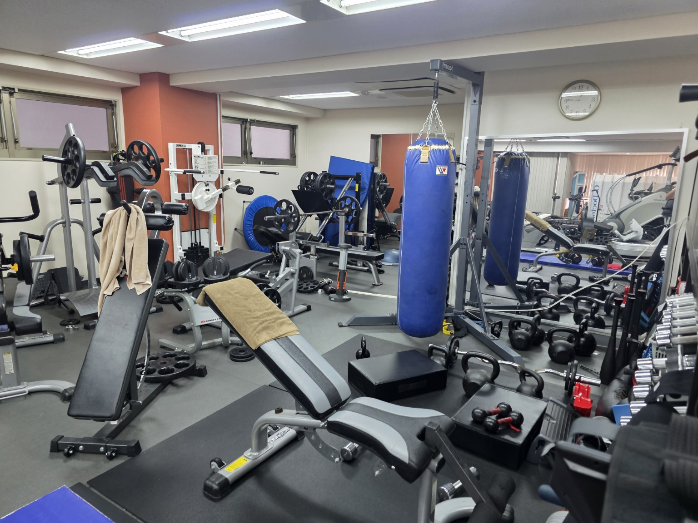

「将来のこと、
相談してみよう。」
お金や住まいの不安を一人で抱えず、学び、相談し、これからを考えられるように。
FOR THE NEXT 100 YEARS
この日本に、生きた証を。
あなたが今日、向き合う一人の人生。
そこから、未来へつながる仕事がある。
LEAVE SOMETHING THAT LIVES ON.
あなたが書いた言葉。届けた提案。支えた一人。
その仕事の先に、家族がいて、子どもたちがいる。
THE FUTURE STARTS CLOSE TO HOME
未来の始まりは、目の前の暮らし。
100年後の希望は、
今日を生きる人の暮らしから。
お金や住まいの不安を一人で抱えず、学び、相談し、これからを考えられるように。
大切な人と未来を話し、暮らしを整える一歩を選べるように。
身近な大人の姿から、自分の未来に希望を持てるように。
一人の人生を支えることから、
次の世代に、希望をつないでいく。
MAKE THE PURPOSE YOUR WORK
この想いを、毎日の仕事に。
企業と地域をつなぎ、
人生支援を全国へ届ける。
それが、REALIZE OSの挑戦です。
リアライズクラブ
人生について学ぶLIFE JOURNEY、AIみお先生、専門相談。自分の暮らしと将来に向き合える仕組みを届けます。
ライフメイクパートナーズ
加盟店へ営業ノウハウ・教育・システムを届け、住まいや暮らしの相談を実際の支援へつなぎます。
相談から次の行動までをつなぐ、営業・顧客管理システム「OSMA」も開発しています。
得意なことも、これから磨きたい力も。
この挑戦に、活かしてほしい。
あなたが出会う一社から、
支えられる人生を増やしていく。
LMP加盟営業 / RC入会営業 / 提携・OEM / 住宅営業
経営者の想いや課題を聞き、LMP加盟やRC導入を提案。提携先との新しい事業づくりや、日本リアライズでの住まいの相談・提案・実行支援も担います。
仕事への入り口〈例〉：企業リサーチ、提案準備、商談同行。
あなたが支える一つの窓口から、
地域で続く安心を育てていく。
LMPのSV / RC導入・活用支援 / 研修・教育 / 相談運営
加盟店の立ち上げや営業活動、入会企業の利用開始と定着を支援。研修、相談の担当者への振り分け、対応状況の確認も進めます。
仕事への入り口〈例〉：研修の運営補助、利用案内、問い合わせ対応。
あなたがつくる言葉と仕組みで、
誰かの「考えてみよう」を生む。
コンテンツ制作 / 広報 / LINE運用 / AI・システム
動画・教材・診断・LPの制作、SNS発信、LINE配信と改善。OSMAやAIサービスの企画・開発・運用を通して、日々使われる人生支援を育てます。
仕事への入り口〈例〉：制作、配信設定、利用者の声の整理、動作確認。
あなたの丁寧な一つの仕事が、
全国へ届ける事業の土台になる。
LMP加盟本部 / RC本部 / 採用・人事 / 経営管理
加盟・入会手続き、研修手配、会員管理、請求、問い合わせ対応。採用・育成、経理・予算管理を通して、成長する組織を支えます。
仕事への入り口〈例〉：手続きや運営の補助から、業務の改善・仕組み化へ。
BUILD THE NEXT CHAPTER
今、この挑戦に加わる意味。
この会社の、これからを。
現場で磨いたノウハウを、全国で使われる仕組みへ。今は、その土台を形にするフェーズです。
一本の教材、一つの配信、加盟店を支える工夫。目の前の改善を、広く使われる仕組みに育てるチャンスがあります。
なぜ、その提案をするのか。なぜ、この事業をつくるのか。考え方に触れ、自分で仕事を動かす力をつけていく。
これから育てるチームがある。担当する仕事で実績を積み、プロジェクトや事業の責任を担う役割に挑戦できます。
まだ決まっていないことを考え、試し、改善する毎日です。担当業務や役割は、経験・適性・事業の状況に応じて決定します。
身につけたい力。挑戦してみたい仕事。
大切な人と過ごしたい暮らし。
お客様の人生を想うように、
一緒に働く仲間の人生も、大切にしたい。
自分の成長と、誰かの幸せがつながっていく。
そんな働き方を、一緒につくっていこう。
LIVING OUR PURPOSE
理念を、社員の毎日に。
健康が大切。そう伝える私たちだから、
会社に、社員が使えるジムをつくりました。

いつまでも働ける自分。
家族を守れる自分。
人生を最後まで、自分の身体で楽しむ。
そんな未来を目指して、仕事の合間にも、仕事終わりにも。身体を動かす習慣を、日常の中につくれるように。
お客様に届ける人生支援を、一緒に働く仲間にも。想いを、毎日使える環境にしています。
ジムと、そこに込めた想いを見る